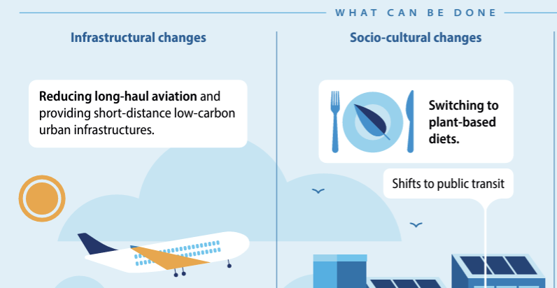

Modern climate change in context
Week
GEOS 3410
Week Schedule
Tuesday
- Course evaluation
- Wrap-up environmental Δ
Thursday
- Enviromental change: past, present, future
- What now?
Outside of class
- Readings: Syllabus / Canvas
- Schedule your final assessment
Course Evaluation
https://newtrinity.evaluationkit.com/
Example Final Assessment Prompt
Climate → Environmental Change
Looking forward
from the past
Rates of change: Permo-Triassic
| $\Delta pCO_2~(ppm): 426^{+133}_{−96} \longrightarrow 2507^{+4764}_{−1193}$ | | | $\Delta t = 75000~yr$ |

Rates of change: PETM
| $\Delta pCO_2~(ppm): 1000 \longrightarrow 2000$ | | | $\Delta t = 5000~yr$ |
Data: Zachos+ 2001
Rates of change: Modern
| $\Delta pCO_2~(ppm): 315 \longrightarrow 425$ | | | $\Delta t = 1958 → 2024$ |

Climate Models

Unprecedented climate state
Higher resolution → better predictions/forecasts

Sea ice processes
Cryosphere change: Sea ice

Cryosphere change: Sea ice

Ice sheet processes
Cryosphere change: Ice Sheets

Cryosphere change: Ice Sheets

To What Do We Devote Ourselves?
Parting thoughts
| Look to well-vetted science and climate-equilibrium practices |  |
| Approach industrialism with skepticism United airlines → |
 |